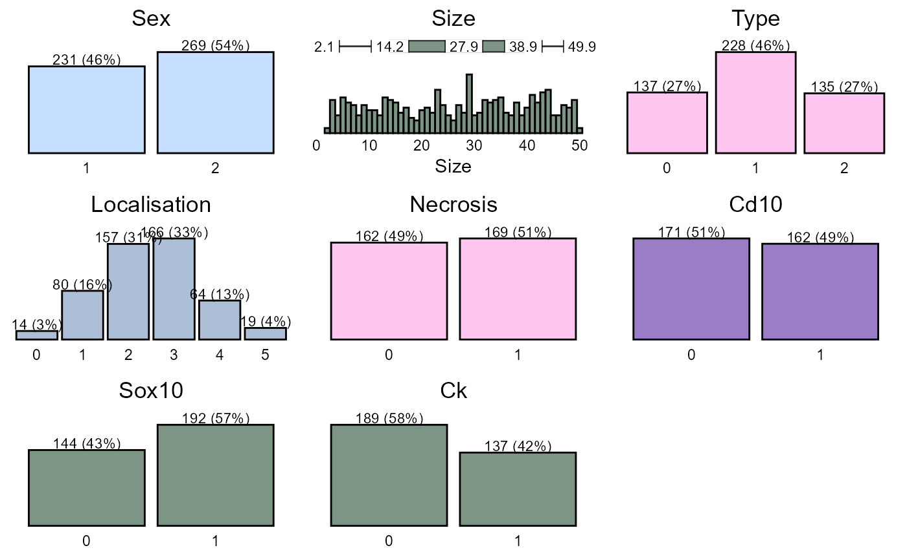

Data Management
data_management.RmdIntroduction
This article is a thorough guide to data management in our. It mainly uses the dplyr package with additional cancR functions. The article is structured as chapters, where each chapter describes a specific task and should work as a library.
Loading the cancR package
First we load the cancR package. The package automatically loads many packages useful for data management
Data
The cancR package comes with ready-to-use datasets. In this article we use the redcap_df dataset which imitates a dataset exported directly from redcap.
Combining functions with the piping operator
It is advised to combine the functions described in this article into
one code chunk that runs all functions at once. The functions are
combined with the symbol %>% called a pipe. The shortcut
for a pipe is ctrl+shift+m.
Piping starts by specifying the dataset of which the analyses should be performed. After this all subsequent functions are separated by a pipe. In the following example we start in the dataset “redcap_df”, where we subsequently select the variables id, sex and birth, add a new variable called “new_variable” and lastly filter so that we subset the dataset to rows where type = 1. All these functions are combined into a piping structure and assigned to a new object named “new_data”
Data inspection
Before starting on data management, it is important to get an overview of the dataset.
Inspect the dataset by either View(redcap_df) or the first six rows:
head(redcap_df)
#> id sex age birth followup date_of_surgery size type localisation
#> 1 1 1 40.9 26-04-1958 23-04-2021 1999-03-29 3.991349 0 2
#> 2 2 2 57.8 18-01-1941 12-08-2024 1998-10-20 48.688670 0 1
#> 3 3 2 32.2 30-07-1963 20-02-2022 1995-10-26 11.245841 0 4
#> 4 4 2 58.7 31-12-1936 29-06-2024 1995-09-14 11.609164 2 1
#> 5 5 2 29.3 12-01-1961 14-05-2023 1990-04-22 6.980464 0 3
#> 6 6 2 18.3 10-12-1975 06-04-2025 1994-03-21 49.029171 2 0
#> necrosis cd10 sox10 ck death_date recurrence_date metastasis_date
#> 1 0 NA 1 0 <NA> <NA> <NA>
#> 2 1 0 0 0 <NA> 2014-12-09 <NA>
#> 3 0 0 1 NA <NA> <NA> <NA>
#> 4 1 1 NA 0 2019-07-27 <NA> 2012-04-04
#> 5 0 0 0 0 2018-04-19 <NA> 2011-01-16
#> 6 NA NA NA 0 <NA> <NA> <NA>It is also important to assess the structure of the data to check for correct formatting. E.g. are date-variables coded as dates, continouous variables as numeric etc.
str(redcap_df)
#> 'data.frame': 500 obs. of 16 variables:
#> $ id : int 1 2 3 4 5 6 7 8 9 10 ...
#> $ sex : num 1 2 2 2 2 2 2 1 1 2 ...
#> $ age : num 40.9 57.8 32.2 58.7 29.3 18.3 52.7 36.2 42.6 55.8 ...
#> $ birth : chr "26-04-1958" "18-01-1941" "30-07-1963" "31-12-1936" ...
#> $ followup : chr "23-04-2021" "12-08-2024" "20-02-2022" "29-06-2024" ...
#> $ date_of_surgery: chr "1999-03-29" "1998-10-20" "1995-10-26" "1995-09-14" ...
#> $ size : num 3.99 48.69 11.25 11.61 6.98 ...
#> $ type : int 0 0 0 2 0 2 0 2 2 1 ...
#> $ localisation : int 2 1 4 1 3 0 3 5 4 1 ...
#> $ necrosis : num 0 1 0 1 0 NA 1 NA 0 0 ...
#> $ cd10 : num NA 0 0 1 0 NA 1 1 1 NA ...
#> $ sox10 : num 1 0 1 NA 0 NA 0 0 0 1 ...
#> $ ck : num 0 0 NA 0 0 0 NA 0 0 1 ...
#> $ death_date : chr NA NA NA "2019-07-27" ...
#> $ recurrence_date: chr NA "2014-12-09" NA NA ...
#> $ metastasis_date: chr NA NA NA "2012-04-04" ...Here we see that all date variables are coded as characters and not date. The conversion to date are described in the chapter: “Date formatting”
To get a graphical glimpse of the data we can use the summarisR() function:

And to exploit the number of missing values we use the missR() function
missR(redcap_df)
#> Nas detected in the following variables:
#>
#> variable NAs
#> 1 metastasis_date 329
#> 2 death_date 322
#> 3 recurrence_date 261
#> 4 ck 174
#> 5 necrosis 169
#> 6 cd10 167
#> 7 sox10 164We can also check if numerical variables are normally distributed with the distributR() function
distributR(redcap_df,
vars = size)
Data management
The next section goes through the most basic data management functions from the dplyr package.
Selection of variables
Variables/columns can be selected and removed with the select() function.
redcap_df %>%
select(id, sex, birth) %>%
head
#> id sex birth
#> 1 1 1 26-04-1958
#> 2 2 2 18-01-1941
#> 3 3 2 30-07-1963
#> 4 4 2 31-12-1936
#> 5 5 2 12-01-1961
#> 6 6 2 10-12-1975Variables are removed with a minus sign.
redcap_df %>%
select(-id, -birth) %>%
head
#> sex age followup date_of_surgery size type localisation necrosis cd10
#> 1 1 40.9 23-04-2021 1999-03-29 3.991349 0 2 0 NA
#> 2 2 57.8 12-08-2024 1998-10-20 48.688670 0 1 1 0
#> 3 2 32.2 20-02-2022 1995-10-26 11.245841 0 4 0 0
#> 4 2 58.7 29-06-2024 1995-09-14 11.609164 2 1 1 1
#> 5 2 29.3 14-05-2023 1990-04-22 6.980464 0 3 0 0
#> 6 2 18.3 06-04-2025 1994-03-21 49.029171 2 0 NA NA
#> sox10 ck death_date recurrence_date metastasis_date
#> 1 1 0 <NA> <NA> <NA>
#> 2 0 0 <NA> 2014-12-09 <NA>
#> 3 1 NA <NA> <NA> <NA>
#> 4 NA 0 2019-07-27 <NA> 2012-04-04
#> 5 0 0 2018-04-19 <NA> 2011-01-16
#> 6 NA 0 <NA> <NA> <NA>It is also possible to choose variable based on text patterns, which is useful for variables with a common prefix/suffix such as _date
redcap_df %>%
select(contains("_date")) %>%
head
#> death_date recurrence_date metastasis_date
#> 1 <NA> <NA> <NA>
#> 2 <NA> 2014-12-09 <NA>
#> 3 <NA> <NA> <NA>
#> 4 2019-07-27 <NA> 2012-04-04
#> 5 2018-04-19 <NA> 2011-01-16
#> 6 <NA> <NA> <NA>The text pattern can also be starts_with, ends_with and matches for an exact match.
If we need to select a large range of variables we call the first and last separated by a colon:
redcap_df %>%
select(sex:sox10) %>%
head
#> sex age birth followup date_of_surgery size type localisation
#> 1 1 40.9 26-04-1958 23-04-2021 1999-03-29 3.991349 0 2
#> 2 2 57.8 18-01-1941 12-08-2024 1998-10-20 48.688670 0 1
#> 3 2 32.2 30-07-1963 20-02-2022 1995-10-26 11.245841 0 4
#> 4 2 58.7 31-12-1936 29-06-2024 1995-09-14 11.609164 2 1
#> 5 2 29.3 12-01-1961 14-05-2023 1990-04-22 6.980464 0 3
#> 6 2 18.3 10-12-1975 06-04-2025 1994-03-21 49.029171 2 0
#> necrosis cd10 sox10
#> 1 0 NA 1
#> 2 1 0 0
#> 3 0 0 1
#> 4 1 1 NA
#> 5 0 0 0
#> 6 NA NA NARenaming variables
Renaming of variable names can be done using rename(). The syntax is “new name” = “old name”
redcap_df %>%
rename(index = date_of_surgery,
cytokeratin = ck) %>%
head
#> id sex age birth followup index size type localisation
#> 1 1 1 40.9 26-04-1958 23-04-2021 1999-03-29 3.991349 0 2
#> 2 2 2 57.8 18-01-1941 12-08-2024 1998-10-20 48.688670 0 1
#> 3 3 2 32.2 30-07-1963 20-02-2022 1995-10-26 11.245841 0 4
#> 4 4 2 58.7 31-12-1936 29-06-2024 1995-09-14 11.609164 2 1
#> 5 5 2 29.3 12-01-1961 14-05-2023 1990-04-22 6.980464 0 3
#> 6 6 2 18.3 10-12-1975 06-04-2025 1994-03-21 49.029171 2 0
#> necrosis cd10 sox10 cytokeratin death_date recurrence_date metastasis_date
#> 1 0 NA 1 0 <NA> <NA> <NA>
#> 2 1 0 0 0 <NA> 2014-12-09 <NA>
#> 3 0 0 1 NA <NA> <NA> <NA>
#> 4 1 1 NA 0 2019-07-27 <NA> 2012-04-04
#> 5 0 0 0 0 2018-04-19 <NA> 2011-01-16
#> 6 NA NA NA 0 <NA> <NA> <NA>Create/modify variables
Variables can be created or modified with the mutate() function with the syntax: mutate(variable = condition). If the variable already exists in the dataset, it is modified automatically.
We now recode necrosis, so that 1 = yes and everything else is “no”.
redcap_df %>%
mutate(necrosis = ifelse(necrosis == 1, "yes", "no")) %>%
head
#> id sex age birth followup date_of_surgery size type localisation
#> 1 1 1 40.9 26-04-1958 23-04-2021 1999-03-29 3.991349 0 2
#> 2 2 2 57.8 18-01-1941 12-08-2024 1998-10-20 48.688670 0 1
#> 3 3 2 32.2 30-07-1963 20-02-2022 1995-10-26 11.245841 0 4
#> 4 4 2 58.7 31-12-1936 29-06-2024 1995-09-14 11.609164 2 1
#> 5 5 2 29.3 12-01-1961 14-05-2023 1990-04-22 6.980464 0 3
#> 6 6 2 18.3 10-12-1975 06-04-2025 1994-03-21 49.029171 2 0
#> necrosis cd10 sox10 ck death_date recurrence_date metastasis_date
#> 1 no NA 1 0 <NA> <NA> <NA>
#> 2 yes 0 0 0 <NA> 2014-12-09 <NA>
#> 3 no 0 1 NA <NA> <NA> <NA>
#> 4 yes 1 NA 0 2019-07-27 <NA> 2012-04-04
#> 5 no 0 0 0 2018-04-19 <NA> 2011-01-16
#> 6 <NA> NA NA 0 <NA> <NA> <NA>Notice that now there were missing values in necrosis which have been replaced by “no”. This is the main side effect of ifelse - if the condition is not satisfied (here necrosis = 1), then everything else must be no including missing values.
If we want more explicit control with the recoding or we have more than one condition, we use case_when
redcap_df %>%
mutate(necrosis = case_when(necrosis == 1 ~ "yes",
necrosis == 0 ~ "no")) %>%
head
#> id sex age birth followup date_of_surgery size type localisation
#> 1 1 1 40.9 26-04-1958 23-04-2021 1999-03-29 3.991349 0 2
#> 2 2 2 57.8 18-01-1941 12-08-2024 1998-10-20 48.688670 0 1
#> 3 3 2 32.2 30-07-1963 20-02-2022 1995-10-26 11.245841 0 4
#> 4 4 2 58.7 31-12-1936 29-06-2024 1995-09-14 11.609164 2 1
#> 5 5 2 29.3 12-01-1961 14-05-2023 1990-04-22 6.980464 0 3
#> 6 6 2 18.3 10-12-1975 06-04-2025 1994-03-21 49.029171 2 0
#> necrosis cd10 sox10 ck death_date recurrence_date metastasis_date
#> 1 no NA 1 0 <NA> <NA> <NA>
#> 2 yes 0 0 0 <NA> 2014-12-09 <NA>
#> 3 no 0 1 NA <NA> <NA> <NA>
#> 4 yes 1 NA 0 2019-07-27 <NA> 2012-04-04
#> 5 no 0 0 0 2018-04-19 <NA> 2011-01-16
#> 6 <NA> NA NA 0 <NA> <NA> <NA>Now we have preserved the missing values. We can also control what to do with values that does not satisfy any of the criteria
redcap_df %>%
mutate(necrosis = case_when(necrosis %in% 1 ~ "yes",
necrosis %in% 0 ~ "no",
T ~ "missing")) %>%
head
#> id sex age birth followup date_of_surgery size type localisation
#> 1 1 1 40.9 26-04-1958 23-04-2021 1999-03-29 3.991349 0 2
#> 2 2 2 57.8 18-01-1941 12-08-2024 1998-10-20 48.688670 0 1
#> 3 3 2 32.2 30-07-1963 20-02-2022 1995-10-26 11.245841 0 4
#> 4 4 2 58.7 31-12-1936 29-06-2024 1995-09-14 11.609164 2 1
#> 5 5 2 29.3 12-01-1961 14-05-2023 1990-04-22 6.980464 0 3
#> 6 6 2 18.3 10-12-1975 06-04-2025 1994-03-21 49.029171 2 0
#> necrosis cd10 sox10 ck death_date recurrence_date metastasis_date
#> 1 no NA 1 0 <NA> <NA> <NA>
#> 2 yes 0 0 0 <NA> 2014-12-09 <NA>
#> 3 no 0 1 NA <NA> <NA> <NA>
#> 4 yes 1 NA 0 2019-07-27 <NA> 2012-04-04
#> 5 no 0 0 0 2018-04-19 <NA> 2011-01-16
#> 6 missing NA NA 0 <NA> <NA> <NA>Multiple mutate functions can be collected in one call
redcap_df %>%
mutate(new_variable = "new",
sex = ifelse(sex == 1, "f", "m"),
size = case_when(size > 40 ~ "large",
size < 10 ~ "small",
T ~ "intermediate")) %>%
head
#> id sex age birth followup date_of_surgery size type
#> 1 1 f 40.9 26-04-1958 23-04-2021 1999-03-29 small 0
#> 2 2 m 57.8 18-01-1941 12-08-2024 1998-10-20 large 0
#> 3 3 m 32.2 30-07-1963 20-02-2022 1995-10-26 intermediate 0
#> 4 4 m 58.7 31-12-1936 29-06-2024 1995-09-14 intermediate 2
#> 5 5 m 29.3 12-01-1961 14-05-2023 1990-04-22 small 0
#> 6 6 m 18.3 10-12-1975 06-04-2025 1994-03-21 large 2
#> localisation necrosis cd10 sox10 ck death_date recurrence_date
#> 1 2 0 NA 1 0 <NA> <NA>
#> 2 1 1 0 0 0 <NA> 2014-12-09
#> 3 4 0 0 1 NA <NA> <NA>
#> 4 1 1 1 NA 0 2019-07-27 <NA>
#> 5 3 0 0 0 0 2018-04-19 <NA>
#> 6 0 NA NA NA 0 <NA> <NA>
#> metastasis_date new_variable
#> 1 <NA> new
#> 2 <NA> new
#> 3 <NA> new
#> 4 2012-04-04 new
#> 5 2011-01-16 new
#> 6 <NA> newRecoding of variables
Recoding of variables can be done with the recodR() function in the cancR package. The syntax here is a list of lists, so that list(variable = list(new name = old name))
redcap_df %>%
recodR(list("sex" =
list("female" = 1,
"male" = 2),
"type" =
list("benign" = 0,
"in_situ" = 1,
"malignant" = 2),
"localisation" =
list("head" = 1,
"neck" = 2,
"trunk" = 3,
"upper_extremity" = 4,
"lower_extremity" = 5))) %>%
head
#> id sex age birth followup date_of_surgery size type
#> 1 1 female 40.9 26-04-1958 23-04-2021 1999-03-29 3.991349 benign
#> 2 2 male 57.8 18-01-1941 12-08-2024 1998-10-20 48.688670 benign
#> 3 3 male 32.2 30-07-1963 20-02-2022 1995-10-26 11.245841 benign
#> 4 4 male 58.7 31-12-1936 29-06-2024 1995-09-14 11.609164 malignant
#> 5 5 male 29.3 12-01-1961 14-05-2023 1990-04-22 6.980464 benign
#> 6 6 male 18.3 10-12-1975 06-04-2025 1994-03-21 49.029171 malignant
#> localisation necrosis cd10 sox10 ck death_date recurrence_date
#> 1 neck 0 NA 1 0 <NA> <NA>
#> 2 head 1 0 0 0 <NA> 2014-12-09
#> 3 upper_extremity 0 0 1 NA <NA> <NA>
#> 4 head 1 1 NA 0 2019-07-27 <NA>
#> 5 trunk 0 0 0 0 2018-04-19 <NA>
#> 6 0 NA NA NA 0 <NA> <NA>
#> metastasis_date
#> 1 <NA>
#> 2 <NA>
#> 3 <NA>
#> 4 2012-04-04
#> 5 2011-01-16
#> 6 <NA>If the recoding should be more advanced and should be based on one or more conditions, we can use ifelse() or case_when() (see examples under “Create/modify variables”).
Date formatting
Dates are often formatted as character strings and need to be converted to correct date format. This can easily be done with the datR() function:
redcap_df %>%
datR(c(contains("date"), birth, followup)) %>%
head
#> id sex age birth followup date_of_surgery size type
#> <int> <num> <num> <Date> <Date> <Date> <num> <int>
#> 1: 1 1 40.9 1958-04-26 2021-04-23 1999-03-29 3.991349 0
#> 2: 2 2 57.8 1941-01-18 2024-08-12 1998-10-20 48.688670 0
#> 3: 3 2 32.2 1963-07-30 2022-02-20 1995-10-26 11.245841 0
#> 4: 4 2 58.7 1936-12-31 2024-06-29 1995-09-14 11.609164 2
#> 5: 5 2 29.3 1961-01-12 2023-05-14 1990-04-22 6.980464 0
#> 6: 6 2 18.3 1975-12-10 2025-04-06 1994-03-21 49.029171 2
#> localisation necrosis cd10 sox10 ck death_date recurrence_date
#> <int> <num> <num> <num> <num> <Date> <Date>
#> 1: 2 0 NA 1 0 <NA> <NA>
#> 2: 1 1 0 0 0 <NA> 2014-12-09
#> 3: 4 0 0 1 NA <NA> <NA>
#> 4: 1 1 1 NA 0 2019-07-27 <NA>
#> 5: 3 0 0 0 0 2018-04-19 <NA>
#> 6: 0 NA NA NA 0 <NA> <NA>
#> metastasis_date
#> <Date>
#> 1: <NA>
#> 2: <NA>
#> 3: <NA>
#> 4: 2012-04-04
#> 5: 2011-01-16
#> 6: <NA>Categorization of continuous variables
The optimal method for splitting continuous variables depends on the number of splits: - One splits: ifelse() - More than one split: case_when() - Splits based on a sequence or quantiles: cutR()
One split with ifelse()
redcap_df %>%
mutate(size_bin = ifelse(size > 20, "large", "small")) %>%
head
#> id sex age birth followup date_of_surgery size type
#> <int> <num> <num> <char> <char> <char> <num> <int>
#> 1: 1 1 40.9 26-04-1958 23-04-2021 1999-03-29 3.991349 0
#> 2: 2 2 57.8 18-01-1941 12-08-2024 1998-10-20 48.688670 0
#> 3: 3 2 32.2 30-07-1963 20-02-2022 1995-10-26 11.245841 0
#> 4: 4 2 58.7 31-12-1936 29-06-2024 1995-09-14 11.609164 2
#> 5: 5 2 29.3 12-01-1961 14-05-2023 1990-04-22 6.980464 0
#> 6: 6 2 18.3 10-12-1975 06-04-2025 1994-03-21 49.029171 2
#> localisation necrosis cd10 sox10 ck death_date recurrence_date
#> <int> <num> <num> <num> <num> <char> <char>
#> 1: 2 0 NA 1 0 <NA> <NA>
#> 2: 1 1 0 0 0 <NA> 2014-12-09
#> 3: 4 0 0 1 NA <NA> <NA>
#> 4: 1 1 1 NA 0 2019-07-27 <NA>
#> 5: 3 0 0 0 0 2018-04-19 <NA>
#> 6: 0 NA NA NA 0 <NA> <NA>
#> metastasis_date size_bin
#> <char> <char>
#> 1: <NA> small
#> 2: <NA> large
#> 3: <NA> small
#> 4: 2012-04-04 small
#> 5: 2011-01-16 small
#> 6: <NA> largeMore splits with case_when()
redcap_df %>%
mutate(size_bin = case_when(size > 40 ~ "large",
size < 10 ~ "small",
T ~ "intermediate")) %>%
head
#> id sex age birth followup date_of_surgery size type
#> <int> <num> <num> <char> <char> <char> <num> <int>
#> 1: 1 1 40.9 26-04-1958 23-04-2021 1999-03-29 3.991349 0
#> 2: 2 2 57.8 18-01-1941 12-08-2024 1998-10-20 48.688670 0
#> 3: 3 2 32.2 30-07-1963 20-02-2022 1995-10-26 11.245841 0
#> 4: 4 2 58.7 31-12-1936 29-06-2024 1995-09-14 11.609164 2
#> 5: 5 2 29.3 12-01-1961 14-05-2023 1990-04-22 6.980464 0
#> 6: 6 2 18.3 10-12-1975 06-04-2025 1994-03-21 49.029171 2
#> localisation necrosis cd10 sox10 ck death_date recurrence_date
#> <int> <num> <num> <num> <num> <char> <char>
#> 1: 2 0 NA 1 0 <NA> <NA>
#> 2: 1 1 0 0 0 <NA> 2014-12-09
#> 3: 4 0 0 1 NA <NA> <NA>
#> 4: 1 1 1 NA 0 2019-07-27 <NA>
#> 5: 3 0 0 0 0 2018-04-19 <NA>
#> 6: 0 NA NA NA 0 <NA> <NA>
#> metastasis_date size_bin
#> <char> <char>
#> 1: <NA> small
#> 2: <NA> large
#> 3: <NA> intermediate
#> 4: 2012-04-04 intermediate
#> 5: 2011-01-16 small
#> 6: <NA> largeSplits based on a sequence can be done with the cutR() function:
redcap_df %>%
cutR(size,
seq(0,50,10)) %>%
head
#> id sex age birth followup date_of_surgery size type
#> <int> <num> <num> <char> <char> <char> <fctr> <int>
#> 1: 1 1 40.9 26-04-1958 23-04-2021 1999-03-29 0-10 0
#> 2: 2 2 57.8 18-01-1941 12-08-2024 1998-10-20 40-50 0
#> 3: 3 2 32.2 30-07-1963 20-02-2022 1995-10-26 10-20 0
#> 4: 4 2 58.7 31-12-1936 29-06-2024 1995-09-14 10-20 2
#> 5: 5 2 29.3 12-01-1961 14-05-2023 1990-04-22 0-10 0
#> 6: 6 2 18.3 10-12-1975 06-04-2025 1994-03-21 40-50 2
#> localisation necrosis cd10 sox10 ck death_date recurrence_date
#> <int> <num> <num> <num> <num> <char> <char>
#> 1: 2 0 NA 1 0 <NA> <NA>
#> 2: 1 1 0 0 0 <NA> 2014-12-09
#> 3: 4 0 0 1 NA <NA> <NA>
#> 4: 1 1 1 NA 0 2019-07-27 <NA>
#> 5: 3 0 0 0 0 2018-04-19 <NA>
#> 6: 0 NA NA NA 0 <NA> <NA>
#> metastasis_date
#> <char>
#> 1: <NA>
#> 2: <NA>
#> 3: <NA>
#> 4: 2012-04-04
#> 5: 2011-01-16
#> 6: <NA>Multiple splits can also be performed with cutR() with name assigning
redcap_df %>%
cutR(vars = c(age, size),
seqlist = list("age" = seq(0,100,10),
"size" = list("quantile", c(0,0.25,0.5,0.75,1))),
name.list = list("age" = "age_group",
"size" = "size_bin")) %>%
head
#> id sex age birth followup date_of_surgery size type
#> <int> <num> <num> <char> <char> <char> <num> <int>
#> 1: 1 1 40.9 26-04-1958 23-04-2021 1999-03-29 3.991349 0
#> 2: 2 2 57.8 18-01-1941 12-08-2024 1998-10-20 48.688670 0
#> 3: 3 2 32.2 30-07-1963 20-02-2022 1995-10-26 11.245841 0
#> 4: 4 2 58.7 31-12-1936 29-06-2024 1995-09-14 11.609164 2
#> 5: 5 2 29.3 12-01-1961 14-05-2023 1990-04-22 6.980464 0
#> 6: 6 2 18.3 10-12-1975 06-04-2025 1994-03-21 49.029171 2
#> localisation necrosis cd10 sox10 ck death_date recurrence_date
#> <int> <num> <num> <num> <num> <char> <char>
#> 1: 2 0 NA 1 0 <NA> <NA>
#> 2: 1 1 0 0 0 <NA> 2014-12-09
#> 3: 4 0 0 1 NA <NA> <NA>
#> 4: 1 1 1 NA 0 2019-07-27 <NA>
#> 5: 3 0 0 0 0 2018-04-19 <NA>
#> 6: 0 NA NA NA 0 <NA> <NA>
#> metastasis_date age_group size_bin
#> <char> <fctr> <fctr>
#> 1: <NA> 40-50 2-14
#> 2: <NA> 50-60 39-50
#> 3: <NA> 30-40 2-14
#> 4: 2012-04-04 50-60 2-14
#> 5: 2011-01-16 20-30 2-14
#> 6: <NA> 10-20 39-50The new variables can also be given the same name pattern if the input variables are similar such as dates
redcap_df %>%
#Conversion into date format
datR(contains("date")) %>%
cutR(vars = c(recurrence_date, metastasis_date),
seqlist = seq(1900,2030,10),
name.pattern = "_bin")
#> id sex age birth followup date_of_surgery size type
#> <int> <num> <num> <char> <char> <Date> <num> <int>
#> 1: 1 1 40.9 26-04-1958 23-04-2021 1999-03-29 3.991349 0
#> 2: 2 2 57.8 18-01-1941 12-08-2024 1998-10-20 48.688670 0
#> 3: 3 2 32.2 30-07-1963 20-02-2022 1995-10-26 11.245841 0
#> 4: 4 2 58.7 31-12-1936 29-06-2024 1995-09-14 11.609164 2
#> 5: 5 2 29.3 12-01-1961 14-05-2023 1990-04-22 6.980464 0
#> ---
#> 496: 496 1 47.7 29-04-1955 07-11-2022 2002-12-30 44.123152 2
#> 497: 497 1 42.9 17-03-1956 16-06-2025 1999-02-18 41.460467 2
#> 498: 498 1 29.2 29-07-1961 25-03-2024 1990-10-28 24.048037 0
#> 499: 499 2 25.0 13-09-1980 25-09-2025 2005-08-26 49.166849 1
#> 500: 500 2 51.4 29-05-1947 24-04-2022 1998-10-24 33.284086 1
#> localisation necrosis cd10 sox10 ck death_date recurrence_date
#> <int> <num> <num> <num> <num> <Date> <Date>
#> 1: 2 0 NA 1 0 <NA> <NA>
#> 2: 1 1 0 0 0 <NA> 2014-12-09
#> 3: 4 0 0 1 NA <NA> <NA>
#> 4: 1 1 1 NA 0 2019-07-27 <NA>
#> 5: 3 0 0 0 0 2018-04-19 <NA>
#> ---
#> 496: 3 NA NA NA 0 <NA> <NA>
#> 497: 2 1 0 NA 1 <NA> <NA>
#> 498: 2 0 1 1 0 <NA> 2013-11-04
#> 499: 3 NA 1 NA NA 2016-03-26 2011-07-29
#> 500: 1 1 1 1 NA 2020-04-18 2015-02-01
#> metastasis_date recurrence_date_bin metastasis_date_bin
#> <Date> <fctr> <fctr>
#> 1: <NA> <NA> <NA>
#> 2: <NA> 2010-2020 <NA>
#> 3: <NA> <NA> <NA>
#> 4: 2012-04-04 <NA> 2010-2020
#> 5: 2011-01-16 <NA> 2010-2020
#> ---
#> 496: <NA> <NA> <NA>
#> 497: <NA> <NA> <NA>
#> 498: <NA> 2010-2020 <NA>
#> 499: 2010-10-20 2010-2020 2010-2020
#> 500: <NA> 2010-2020 <NA>Conversion to factor
In many cases it is of interest to specify a categorical variable with certain levels or reference groups. This is done with factR(). If nothing else is specified, factR() converts a character string into a factor, with the level with most observations as reference. The function str() is used to show the formatting of the type variable has changed to factor.
redcap_df %>%
factR(type) %>%
str
#> Classes 'data.table' and 'data.frame': 500 obs. of 16 variables:
#> $ id : int 1 2 3 4 5 6 7 8 9 10 ...
#> $ sex : num 1 2 2 2 2 2 2 1 1 2 ...
#> $ age : num 40.9 57.8 32.2 58.7 29.3 18.3 52.7 36.2 42.6 55.8 ...
#> $ birth : chr "26-04-1958" "18-01-1941" "30-07-1963" "31-12-1936" ...
#> $ followup : chr "23-04-2021" "12-08-2024" "20-02-2022" "29-06-2024" ...
#> $ date_of_surgery: chr "1999-03-29" "1998-10-20" "1995-10-26" "1995-09-14" ...
#> $ size : num 3.99 48.69 11.25 11.61 6.98 ...
#> $ type : Factor w/ 3 levels "1","0","2": 2 2 2 3 2 3 2 3 3 1 ...
#> $ localisation : int 2 1 4 1 3 0 3 5 4 1 ...
#> $ necrosis : num 0 1 0 1 0 NA 1 NA 0 0 ...
#> $ cd10 : num NA 0 0 1 0 NA 1 1 1 NA ...
#> $ sox10 : num 1 0 1 NA 0 NA 0 0 0 1 ...
#> $ ck : num 0 0 NA 0 0 0 NA 0 0 1 ...
#> $ death_date : chr NA NA NA "2019-07-27" ...
#> $ recurrence_date: chr NA "2014-12-09" NA NA ...
#> $ metastasis_date: chr NA NA NA "2012-04-04" ...The reference group is specified using the reference argument
redcap_df %>%
factR(type,
reference = "0") %>%
str
#> Classes 'data.table' and 'data.frame': 500 obs. of 16 variables:
#> $ id : int 1 2 3 4 5 6 7 8 9 10 ...
#> $ sex : num 1 2 2 2 2 2 2 1 1 2 ...
#> $ age : num 40.9 57.8 32.2 58.7 29.3 18.3 52.7 36.2 42.6 55.8 ...
#> $ birth : chr "26-04-1958" "18-01-1941" "30-07-1963" "31-12-1936" ...
#> $ followup : chr "23-04-2021" "12-08-2024" "20-02-2022" "29-06-2024" ...
#> $ date_of_surgery: chr "1999-03-29" "1998-10-20" "1995-10-26" "1995-09-14" ...
#> $ size : num 3.99 48.69 11.25 11.61 6.98 ...
#> $ type : Factor w/ 3 levels "0","1","2": 1 1 1 3 1 3 1 3 3 2 ...
#> $ localisation : int 2 1 4 1 3 0 3 5 4 1 ...
#> $ necrosis : num 0 1 0 1 0 NA 1 NA 0 0 ...
#> $ cd10 : num NA 0 0 1 0 NA 1 1 1 NA ...
#> $ sox10 : num 1 0 1 NA 0 NA 0 0 0 1 ...
#> $ ck : num 0 0 NA 0 0 0 NA 0 0 1 ...
#> $ death_date : chr NA NA NA "2019-07-27" ...
#> $ recurrence_date: chr NA "2014-12-09" NA NA ...
#> $ metastasis_date: chr NA NA NA "2012-04-04" ...Levels can be manually assigned
redcap_df %>%
factR(type,
levels = c("2","1","0")) %>%
str
#> Classes 'data.table' and 'data.frame': 500 obs. of 16 variables:
#> $ id : int 1 2 3 4 5 6 7 8 9 10 ...
#> $ sex : num 1 2 2 2 2 2 2 1 1 2 ...
#> $ age : num 40.9 57.8 32.2 58.7 29.3 18.3 52.7 36.2 42.6 55.8 ...
#> $ birth : chr "26-04-1958" "18-01-1941" "30-07-1963" "31-12-1936" ...
#> $ followup : chr "23-04-2021" "12-08-2024" "20-02-2022" "29-06-2024" ...
#> $ date_of_surgery: chr "1999-03-29" "1998-10-20" "1995-10-26" "1995-09-14" ...
#> $ size : num 3.99 48.69 11.25 11.61 6.98 ...
#> $ type : Factor w/ 3 levels "2","1","0": 3 3 3 1 3 1 3 1 1 2 ...
#> $ localisation : int 2 1 4 1 3 0 3 5 4 1 ...
#> $ necrosis : num 0 1 0 1 0 NA 1 NA 0 0 ...
#> $ cd10 : num NA 0 0 1 0 NA 1 1 1 NA ...
#> $ sox10 : num 1 0 1 NA 0 NA 0 0 0 1 ...
#> $ ck : num 0 0 NA 0 0 0 NA 0 0 1 ...
#> $ death_date : chr NA NA NA "2019-07-27" ...
#> $ recurrence_date: chr NA "2014-12-09" NA NA ...
#> $ metastasis_date: chr NA NA NA "2012-04-04" ...New labels can also be assigned and automatically specify levels simultaneously
redcap_df %>%
factR(type,
labels = c("benign" = "0",
"intermediate" = "1",
"malignant" = "2"),
lab_to_lev = T) %>%
str
#> Classes 'data.table' and 'data.frame': 500 obs. of 16 variables:
#> $ id : int 1 2 3 4 5 6 7 8 9 10 ...
#> $ sex : num 1 2 2 2 2 2 2 1 1 2 ...
#> $ age : num 40.9 57.8 32.2 58.7 29.3 18.3 52.7 36.2 42.6 55.8 ...
#> $ birth : chr "26-04-1958" "18-01-1941" "30-07-1963" "31-12-1936" ...
#> $ followup : chr "23-04-2021" "12-08-2024" "20-02-2022" "29-06-2024" ...
#> $ date_of_surgery: chr "1999-03-29" "1998-10-20" "1995-10-26" "1995-09-14" ...
#> $ size : num 3.99 48.69 11.25 11.61 6.98 ...
#> $ type : Factor w/ 3 levels "benign","intermediate",..: 1 1 1 3 1 3 1 3 3 2 ...
#> $ localisation : int 2 1 4 1 3 0 3 5 4 1 ...
#> $ necrosis : num 0 1 0 1 0 NA 1 NA 0 0 ...
#> $ cd10 : num NA 0 0 1 0 NA 1 1 1 NA ...
#> $ sox10 : num 1 0 1 NA 0 NA 0 0 0 1 ...
#> $ ck : num 0 0 NA 0 0 0 NA 0 0 1 ...
#> $ death_date : chr NA NA NA "2019-07-27" ...
#> $ recurrence_date: chr NA "2014-12-09" NA NA ...
#> $ metastasis_date: chr NA NA NA "2012-04-04" ...Lastly, all the arguments can be specified for multiple variables at once
redcap_df %>%
factR(vars = c(type, sex),
reference = list("sex" = "2"),
levels = list("type" = c("0", "1", "2")),
labels = list("sex" = c("f" = "1",
"m" = "2"),
"type" = c("benign" = "0",
"intermediate" = "1",
"malignant" = "2"))) %>%
str
#> Classes 'data.table' and 'data.frame': 500 obs. of 16 variables:
#> $ id : int 1 2 3 4 5 6 7 8 9 10 ...
#> $ sex : Factor w/ 2 levels "m","f": 2 1 1 1 1 1 1 2 2 1 ...
#> $ age : num 40.9 57.8 32.2 58.7 29.3 18.3 52.7 36.2 42.6 55.8 ...
#> $ birth : chr "26-04-1958" "18-01-1941" "30-07-1963" "31-12-1936" ...
#> $ followup : chr "23-04-2021" "12-08-2024" "20-02-2022" "29-06-2024" ...
#> $ date_of_surgery: chr "1999-03-29" "1998-10-20" "1995-10-26" "1995-09-14" ...
#> $ size : num 3.99 48.69 11.25 11.61 6.98 ...
#> $ type : Factor w/ 3 levels "benign","intermediate",..: 1 1 1 3 1 3 1 3 3 2 ...
#> $ localisation : int 2 1 4 1 3 0 3 5 4 1 ...
#> $ necrosis : num 0 1 0 1 0 NA 1 NA 0 0 ...
#> $ cd10 : num NA 0 0 1 0 NA 1 1 1 NA ...
#> $ sox10 : num 1 0 1 NA 0 NA 0 0 0 1 ...
#> $ ck : num 0 0 NA 0 0 0 NA 0 0 1 ...
#> $ death_date : chr NA NA NA "2019-07-27" ...
#> $ recurrence_date: chr NA "2014-12-09" NA NA ...
#> $ metastasis_date: chr NA NA NA "2012-04-04" ...Subset rows (filters)
If we want to keep only certain rows we use filter(). Here we limit the dataset to patients without necrosis (necrosis = 0)
redcap_df %>%
filter(necrosis == 0) %>%
head
#> id sex age birth followup date_of_surgery size type
#> <int> <num> <num> <char> <char> <char> <num> <int>
#> 1: 1 1 40.9 26-04-1958 23-04-2021 1999-03-29 3.991349 0
#> 2: 3 2 32.2 30-07-1963 20-02-2022 1995-10-26 11.245841 0
#> 3: 5 2 29.3 12-01-1961 14-05-2023 1990-04-22 6.980464 0
#> 4: 9 1 42.6 01-04-1962 25-01-2021 2004-11-09 8.699874 2
#> 5: 10 2 55.8 04-01-1954 02-04-2024 2009-10-22 35.560789 1
#> 6: 20 1 30.3 01-09-1978 08-03-2023 2008-12-01 25.246919 1
#> localisation necrosis cd10 sox10 ck death_date recurrence_date
#> <int> <num> <num> <num> <num> <char> <char>
#> 1: 2 0 NA 1 0 <NA> <NA>
#> 2: 4 0 0 1 NA <NA> <NA>
#> 3: 3 0 0 0 0 2018-04-19 <NA>
#> 4: 4 0 1 0 0 <NA> <NA>
#> 5: 1 0 NA 1 1 <NA> 2014-12-15
#> 6: 4 0 NA 1 0 2020-02-17 <NA>
#> metastasis_date
#> <char>
#> 1: <NA>
#> 2: <NA>
#> 3: 2011-01-16
#> 4: 2010-08-17
#> 5: <NA>
#> 6: <NA>In case of multiple conditions we use the %in% operator,
as this specified that the variables has one of the following values
redcap_df %>%
filter(localisation %in% c(1,2,3)) %>%
head
#> id sex age birth followup date_of_surgery size type
#> <int> <num> <num> <char> <char> <char> <num> <int>
#> 1: 1 1 40.9 26-04-1958 23-04-2021 1999-03-29 3.991349 0
#> 2: 2 2 57.8 18-01-1941 12-08-2024 1998-10-20 48.688670 0
#> 3: 4 2 58.7 31-12-1936 29-06-2024 1995-09-14 11.609164 2
#> 4: 5 2 29.3 12-01-1961 14-05-2023 1990-04-22 6.980464 0
#> 5: 7 2 52.7 14-04-1945 19-03-2024 1997-12-19 48.978832 0
#> 6: 10 2 55.8 04-01-1954 02-04-2024 2009-10-22 35.560789 1
#> localisation necrosis cd10 sox10 ck death_date recurrence_date
#> <int> <num> <num> <num> <num> <char> <char>
#> 1: 2 0 NA 1 0 <NA> <NA>
#> 2: 1 1 0 0 0 <NA> 2014-12-09
#> 3: 1 1 1 NA 0 2019-07-27 <NA>
#> 4: 3 0 0 0 0 2018-04-19 <NA>
#> 5: 3 1 1 0 NA <NA> 2011-10-10
#> 6: 1 0 NA 1 1 <NA> 2014-12-15
#> metastasis_date
#> <char>
#> 1: <NA>
#> 2: <NA>
#> 3: 2012-04-04
#> 4: 2011-01-16
#> 5: <NA>
#> 6: <NA>For numerical variables we use <, >, ==, >= and <=
redcap_df %>%
filter(size > 20) %>%
head
#> id sex age birth followup date_of_surgery size type
#> <int> <num> <num> <char> <char> <char> <num> <int>
#> 1: 2 2 57.8 18-01-1941 12-08-2024 1998-10-20 48.68867 0
#> 2: 6 2 18.3 10-12-1975 06-04-2025 1994-03-21 49.02917 2
#> 3: 7 2 52.7 14-04-1945 19-03-2024 1997-12-19 48.97883 0
#> 4: 8 1 36.2 01-09-1969 14-10-2024 2005-10-30 43.57744 2
#> 5: 10 2 55.8 04-01-1954 02-04-2024 2009-10-22 35.56079 1
#> 6: 11 1 67.4 26-09-1930 21-06-2023 1998-02-24 27.23407 0
#> localisation necrosis cd10 sox10 ck death_date recurrence_date
#> <int> <num> <num> <num> <num> <char> <char>
#> 1: 1 1 0 0 0 <NA> 2014-12-09
#> 2: 0 NA NA NA 0 <NA> <NA>
#> 3: 3 1 1 0 NA <NA> 2011-10-10
#> 4: 5 NA 1 0 0 <NA> <NA>
#> 5: 1 0 NA 1 1 <NA> 2014-12-15
#> 6: 2 NA NA 1 0 2019-03-12 <NA>
#> metastasis_date
#> <char>
#> 1: <NA>
#> 2: <NA>
#> 3: <NA>
#> 4: <NA>
#> 5: <NA>
#> 6: <NA>We can also use between() to specify an interval
redcap_df %>%
filter(between(size, 10,20)) %>%
head
#> id sex age birth followup date_of_surgery size type
#> <int> <num> <num> <char> <char> <char> <num> <int>
#> 1: 3 2 32.2 30-07-1963 20-02-2022 1995-10-26 11.24584 0
#> 2: 4 2 58.7 31-12-1936 29-06-2024 1995-09-14 11.60916 2
#> 3: 12 2 46.0 08-05-1962 17-02-2025 2008-04-23 11.06068 1
#> 4: 15 1 70.7 26-03-1939 05-07-2023 2009-11-18 15.91012 0
#> 5: 18 2 32.0 24-05-1972 12-08-2022 2004-05-31 15.68306 0
#> 6: 19 1 23.4 27-11-1975 17-11-2024 1999-05-08 14.00870 2
#> localisation necrosis cd10 sox10 ck death_date recurrence_date
#> <int> <num> <num> <num> <num> <char> <char>
#> 1: 4 0 0 1 NA <NA> <NA>
#> 2: 1 1 1 NA 0 2019-07-27 <NA>
#> 3: 3 1 NA 1 NA 2019-02-16 <NA>
#> 4: 2 NA 1 0 NA <NA> <NA>
#> 5: 2 1 0 1 0 <NA> <NA>
#> 6: 3 NA 0 0 NA <NA> 2010-06-11
#> metastasis_date
#> <char>
#> 1: <NA>
#> 2: 2012-04-04
#> 3: <NA>
#> 4: 2015-09-01
#> 5: 2014-09-13
#> 6: 2015-10-01Multiple conditions can be combined using so-called “boolean” operators whic are and/or/not etc. Here we keep rows where necrosis = 1 AND localisation is 1, 2 or 3 OR size is larger than 10. Here necrosis needs to be 1, but either of the conditions for localisation or size can be satisified.
redcap_df %>%
filter(necrosis == 1 & (localisation %in% c(1,2,3) | size > 10)) %>%
head
#> id sex age birth followup date_of_surgery size type
#> <int> <num> <num> <char> <char> <char> <num> <int>
#> 1: 2 2 57.8 18-01-1941 12-08-2024 1998-10-20 48.68867 0
#> 2: 4 2 58.7 31-12-1936 29-06-2024 1995-09-14 11.60916 2
#> 3: 7 2 52.7 14-04-1945 19-03-2024 1997-12-19 48.97883 0
#> 4: 12 2 46.0 08-05-1962 17-02-2025 2008-04-23 11.06068 1
#> 5: 14 1 39.6 16-08-1950 24-10-2022 1990-03-12 32.02648 1
#> 6: 16 1 58.8 01-07-1945 19-06-2024 2004-04-01 26.70794 1
#> localisation necrosis cd10 sox10 ck death_date recurrence_date
#> <int> <num> <num> <num> <num> <char> <char>
#> 1: 1 1 0 0 0 <NA> 2014-12-09
#> 2: 1 1 1 NA 0 2019-07-27 <NA>
#> 3: 3 1 1 0 NA <NA> 2011-10-10
#> 4: 3 1 NA 1 NA 2019-02-16 <NA>
#> 5: 3 1 0 0 0 2017-07-18 <NA>
#> 6: 4 1 1 NA NA <NA> 2014-05-27
#> metastasis_date
#> <char>
#> 1: <NA>
#> 2: 2012-04-04
#> 3: <NA>
#> 4: <NA>
#> 5: <NA>
#> 6: <NA>Arranging/sorting data
Sorting is done with the arrange(). If the variable needs to be in descending order it is prefixed by a desc()
redcap_df %>%
arrange(size) %>%
head()
#> id sex age birth followup date_of_surgery size type
#> <int> <num> <num> <char> <char> <char> <num> <int>
#> 1: 28 2 51.5 17-06-1940 07-02-2021 1992-01-02 2.088167 0
#> 2: 350 2 22.5 25-11-1971 14-07-2021 1994-06-03 2.167653 1
#> 3: 189 2 55.5 28-10-1949 08-03-2024 2005-05-15 2.507209 2
#> 4: 194 2 27.4 12-03-1979 02-11-2025 2006-08-21 2.561534 0
#> 5: 241 1 64.6 23-08-1926 18-02-2025 1991-04-06 2.572398 0
#> 6: 334 1 65.5 16-03-1941 08-08-2022 2006-09-26 2.582333 1
#> localisation necrosis cd10 sox10 ck death_date recurrence_date
#> <int> <num> <num> <num> <num> <char> <char>
#> 1: 2 0 NA 1 1 <NA> 2012-01-18
#> 2: 1 1 1 1 1 <NA> 2010-11-09
#> 3: 2 NA 0 1 0 2017-09-21 <NA>
#> 4: 3 NA NA 1 0 <NA> <NA>
#> 5: 3 NA 0 1 NA <NA> 2010-10-18
#> 6: 3 1 NA 1 0 2019-04-01 <NA>
#> metastasis_date
#> <char>
#> 1: 2015-11-02
#> 2: <NA>
#> 3: <NA>
#> 4: <NA>
#> 5: <NA>
#> 6: <NA>Descending size
redcap_df %>%
arrange(desc(size)) %>%
head
#> id sex age birth followup date_of_surgery size type
#> <int> <num> <num> <char> <char> <char> <num> <int>
#> 1: 93 2 79.7 30-05-1924 03-10-2021 2004-02-09 49.88995 0
#> 2: 441 2 42.1 31-05-1967 05-10-2022 2009-06-26 49.51837 0
#> 3: 230 1 31.3 05-04-1961 04-05-2021 1992-08-01 49.44014 1
#> 4: 366 2 19.2 10-05-1979 09-12-2022 1998-07-16 49.43806 1
#> 5: 133 1 65.1 02-02-1930 01-09-2022 1995-02-23 49.31010 1
#> 6: 494 2 72.4 20-05-1928 05-08-2025 2000-10-15 49.28248 1
#> localisation necrosis cd10 sox10 ck death_date recurrence_date
#> <int> <num> <num> <num> <num> <char> <char>
#> 1: 1 NA 1 0 0 <NA> <NA>
#> 2: 2 NA 1 NA 0 <NA> 2011-07-17
#> 3: 3 NA 0 1 NA <NA> 2011-01-25
#> 4: 3 1 0 NA NA 2020-09-26 <NA>
#> 5: 3 NA 0 1 1 <NA> <NA>
#> 6: 2 0 NA 1 NA <NA> 2010-12-03
#> metastasis_date
#> <char>
#> 1: <NA>
#> 2: <NA>
#> 3: 2013-09-04
#> 4: <NA>
#> 5: 2014-07-23
#> 6: <NA>Missing data
To get a quick overview of missing data in the dataset we use missR()
Missing values can be dropped with drop_na()
redcap_df %>%
drop_na(metastasis_date, necrosis) %>%
head
#> id sex age birth followup date_of_surgery size type
#> <int> <num> <num> <char> <char> <char> <num> <int>
#> 1: 4 2 58.7 31-12-1936 29-06-2024 1995-09-14 11.609164 2
#> 2: 5 2 29.3 12-01-1961 14-05-2023 1990-04-22 6.980464 0
#> 3: 9 1 42.6 01-04-1962 25-01-2021 2004-11-09 8.699874 2
#> 4: 17 1 56.8 27-09-1946 05-09-2022 2003-07-16 47.472564 1
#> 5: 18 2 32.0 24-05-1972 12-08-2022 2004-05-31 15.683065 0
#> 6: 23 1 64.5 30-03-1929 21-09-2022 1993-10-10 28.811464 1
#> localisation necrosis cd10 sox10 ck death_date recurrence_date
#> <int> <num> <num> <num> <num> <char> <char>
#> 1: 1 1 1 NA 0 2019-07-27 <NA>
#> 2: 3 0 0 0 0 2018-04-19 <NA>
#> 3: 4 0 1 0 0 <NA> <NA>
#> 4: 2 1 0 0 0 2017-09-28 <NA>
#> 5: 2 1 0 1 0 <NA> <NA>
#> 6: 5 1 NA 1 0 2018-03-01 2011-01-03
#> metastasis_date
#> <char>
#> 1: 2012-04-04
#> 2: 2011-01-16
#> 3: 2010-08-17
#> 4: 2012-08-18
#> 5: 2014-09-13
#> 6: 2010-04-11Sometimes we want to remove rows where at least one of the values are NA. This is done with rowR() which is useful for rowwise operations
redcap_df %>%
rowR(vars = c(cd10, sox10, ck),
type = "any.na",
filter = "remove") %>%
head
#> id sex age birth followup date_of_surgery size type
#> <int> <num> <num> <char> <char> <char> <num> <int>
#> 1: 2 2 57.8 18-01-1941 12-08-2024 1998-10-20 48.688670 0
#> 2: 5 2 29.3 12-01-1961 14-05-2023 1990-04-22 6.980464 0
#> 3: 8 1 36.2 01-09-1969 14-10-2024 2005-10-30 43.577441 2
#> 4: 9 1 42.6 01-04-1962 25-01-2021 2004-11-09 8.699874 2
#> 5: 14 1 39.6 16-08-1950 24-10-2022 1990-03-12 32.026478 1
#> 6: 17 1 56.8 27-09-1946 05-09-2022 2003-07-16 47.472564 1
#> localisation necrosis cd10 sox10 ck death_date recurrence_date
#> <int> <num> <num> <num> <num> <char> <char>
#> 1: 1 1 0 0 0 <NA> 2014-12-09
#> 2: 3 0 0 0 0 2018-04-19 <NA>
#> 3: 5 NA 1 0 0 <NA> <NA>
#> 4: 4 0 1 0 0 <NA> <NA>
#> 5: 3 1 0 0 0 2017-07-18 <NA>
#> 6: 2 1 0 0 0 2017-09-28 <NA>
#> metastasis_date
#> <char>
#> 1: <NA>
#> 2: 2011-01-16
#> 3: <NA>
#> 4: 2010-08-17
#> 5: <NA>
#> 6: 2012-08-18We can also flag the rows into a new variable
redcap_df %>%
rowR(vars = c(cd10, sox10, ck),
type = "any.na",
new = "flag") %>%
head
#> id sex age birth followup date_of_surgery size type
#> <int> <num> <num> <char> <char> <char> <num> <int>
#> 1: 1 1 40.9 26-04-1958 23-04-2021 1999-03-29 3.991349 0
#> 2: 2 2 57.8 18-01-1941 12-08-2024 1998-10-20 48.688670 0
#> 3: 3 2 32.2 30-07-1963 20-02-2022 1995-10-26 11.245841 0
#> 4: 4 2 58.7 31-12-1936 29-06-2024 1995-09-14 11.609164 2
#> 5: 5 2 29.3 12-01-1961 14-05-2023 1990-04-22 6.980464 0
#> 6: 6 2 18.3 10-12-1975 06-04-2025 1994-03-21 49.029171 2
#> localisation necrosis cd10 sox10 ck death_date recurrence_date
#> <int> <num> <num> <num> <num> <char> <char>
#> 1: 2 0 NA 1 0 <NA> <NA>
#> 2: 1 1 0 0 0 <NA> 2014-12-09
#> 3: 4 0 0 1 NA <NA> <NA>
#> 4: 1 1 1 NA 0 2019-07-27 <NA>
#> 5: 3 0 0 0 0 2018-04-19 <NA>
#> 6: 0 NA NA NA 0 <NA> <NA>
#> metastasis_date flag
#> <char> <num>
#> 1: <NA> 1
#> 2: <NA> 0
#> 3: <NA> 1
#> 4: 2012-04-04 1
#> 5: 2011-01-16 0
#> 6: <NA> 1Join multiple data frames
The terminology is that we have a dataset X and a dataset Y.There are different types of joins, as joins can be side-by-side (such as merging to datasets based on a key variable) and end-to-end where one dataside is a continuation of another. In the side-by-side joins we need to specify a “by/key” variable which specifies how we link the two datasets. In the end-to-end join there is never a “key” as these are extensions and should roughly have the same variables.
Left join
In a left_join, dataset X is complete and only observations from dataset Y that are present in X are joined. For all
If we want to join two data frames, we use left_join().
left_join(redcap_df, analysis_df, by = "id") %>%
tail
#> id sex age birth followup date_of_surgery size type
#> <int> <num> <num> <char> <char> <char> <num> <int>
#> 1: 497 1 42.9 17-03-1956 16-06-2025 1999-02-18 41.46047 2
#> 2: 498 1 29.2 29-07-1961 25-03-2024 1990-10-28 24.04804 0
#> 3: 499 2 25.0 13-09-1980 25-09-2025 2005-08-26 49.16685 1
#> 4: 499 2 25.0 13-09-1980 25-09-2025 2005-08-26 49.16685 1
#> 5: 499 2 25.0 13-09-1980 25-09-2025 2005-08-26 49.16685 1
#> 6: 500 2 51.4 29-05-1947 24-04-2022 1998-10-24 33.28409 1
#> localisation necrosis cd10 sox10 ck death_date recurrence_date
#> <int> <num> <num> <num> <num> <char> <char>
#> 1: 2 1 0 NA 1 <NA> <NA>
#> 2: 2 0 1 1 0 <NA> 2013-11-04
#> 3: 3 NA 1 NA NA 2016-03-26 2011-07-29
#> 4: 3 NA 1 NA NA 2016-03-26 2011-07-29
#> 5: 3 NA 1 NA NA 2016-03-26 2011-07-29
#> 6: 1 1 1 1 NA 2020-04-18 2015-02-01
#> metastasis_date X6 X7 X8 X9 X10 X1
#> <char> <num> <num> <num> <num> <num> <fctr>
#> 1: <NA> 50.93656 58.45569 1.2273203 -1.90077533 0.02481369 T1
#> 2: <NA> 36.85346 60.18677 -1.2309572 -1.54352019 -1.33970795 T2
#> 3: 2010-10-20 56.66101 53.24792 -0.1929807 0.04449373 2.64840656 T0
#> 4: 2010-10-20 60.19224 58.47038 -0.6886738 0.59431900 -0.46868751 T0
#> 5: 2010-10-20 77.20068 56.85965 0.8468578 0.86535618 0.22306156 T0
#> 6: <NA> NA NA NA NA NA <NA>
#> X2 X3 X4 X5 ttt event time2 event2 X6_bin
#> <fctr> <fctr> <fctr> <fctr> <num> <fctr> <num> <int> <fctr>
#> 1: 2 T1 0 0 39.6 1 39.42389 1 49.26-59.21
#> 2: 1 T0 1 0 166.8 0 167.58967 0 13.04-49.26
#> 3: 1 T1 0 0 109.2 0 109.78503 1 49.26-59.21
#> 4: 1 T1 1 1 133.2 0 132.84982 0 59.21-69.28
#> 5: 1 T2 1 0 39.6 1 39.79539 1 69.28-111.5
#> 6: <NA> <NA> <NA> <NA> NA <NA> NA NA <NA>
#> X7_bin X8_bin X9_bin X10_bin
#> <fctr> <fctr> <fctr> <fctr>
#> 1: 56.53-59.87 0.6773-3.248 -3.45--0.648 -0.0023-0.6628
#> 2: 59.87-63.27 -4.303--0.6914 -3.45--0.648 -3.147--0.7032
#> 3: 42.59-56.53 -0.6914--0.0393 -0.0061-0.6478 0.6628-3.624
#> 4: 56.53-59.87 -0.6914--0.0393 -0.0061-0.6478 -0.7032--0.0023
#> 5: 56.53-59.87 0.6773-3.248 0.6478-3.377 -0.0023-0.6628
#> 6: <NA> <NA> <NA> <NA>We see that some of the patients do not have any rows, as the redcap_df only has ids up to 350.
We can left_join in a pipe. Here the current dataset we are working with is symbolised by a dot. We can also use other functions with the pipe operator inside the left_join.
analysis_df %>%
arrange(id) %>%
left_join(.,
redcap_df %>% select(id, contains("date")),
by = "id") %>%
tail
#> X6 X7 X8 X9 X10 X1 X2 X3 X4 X5 ttt
#> 1995 78.25916 63.35530 0.77542485 -0.48718868 -1.2763455 T2 1 T2 0 0 58.8
#> 1996 81.18746 55.89216 -1.74053211 -0.65728896 0.6947777 T0 1 T1 1 0 39.6
#> 1997 48.19932 58.22052 0.18632255 2.23907922 -1.5863555 T0 1 T0 0 0 124.8
#> 1998 35.83313 54.87737 -0.88540538 -0.20223392 0.6609114 T2 1 T1 1 1 68.4
#> 1999 47.57334 62.82759 -0.71264813 0.36300159 2.5341682 T0 1 T1 1 0 93.6
#> 2000 61.98850 60.82175 0.01480971 -0.02593649 -0.9846291 T0 1 T2 1 0 18.0
#> event time2 event2 id X6_bin X7_bin X8_bin
#> 1995 1 58.69883 1 698 69.28-111.5 63.27-78.64 0.6773-3.248
#> 1996 1 41.75025 0 699 69.28-111.5 42.59-56.53 -4.303--0.6914
#> 1997 0 124.45097 1 699 13.04-49.26 56.53-59.87 -0.0393-0.6773
#> 1998 0 69.19420 0 700 13.04-49.26 42.59-56.53 -4.303--0.6914
#> 1999 0 93.76463 0 700 13.04-49.26 59.87-63.27 -4.303--0.6914
#> 2000 1 18.75125 1 700 59.21-69.28 59.87-63.27 -0.0393-0.6773
#> X9_bin X10_bin date_of_surgery death_date recurrence_date
#> 1995 -0.648--0.0061 -3.147--0.7032 <NA> <NA> <NA>
#> 1996 -3.45--0.648 0.6628-3.624 <NA> <NA> <NA>
#> 1997 0.6478-3.377 -3.147--0.7032 <NA> <NA> <NA>
#> 1998 -0.648--0.0061 -0.0023-0.6628 <NA> <NA> <NA>
#> 1999 -0.0061-0.6478 0.6628-3.624 <NA> <NA> <NA>
#> 2000 -0.648--0.0061 -3.147--0.7032 <NA> <NA> <NA>
#> metastasis_date
#> 1995 <NA>
#> 1996 <NA>
#> 1997 <NA>
#> 1998 <NA>
#> 1999 <NA>
#> 2000 <NA>Full join
In a full join, all rows are combined
analysis_df %>%
full_join(.,
redcap_df %>% select(id, contains("date")),
by = "id") %>%
tail
#> X6 X7 X8 X9 X10 X1 X2 X3 X4 X5 ttt event time2 event2 id X6_bin
#> 2024 NA NA NA NA NA <NA> <NA> <NA> <NA> <NA> NA <NA> NA NA 448 <NA>
#> 2025 NA NA NA NA NA <NA> <NA> <NA> <NA> <NA> NA <NA> NA NA 463 <NA>
#> 2026 NA NA NA NA NA <NA> <NA> <NA> <NA> <NA> NA <NA> NA NA 468 <NA>
#> 2027 NA NA NA NA NA <NA> <NA> <NA> <NA> <NA> NA <NA> NA NA 469 <NA>
#> 2028 NA NA NA NA NA <NA> <NA> <NA> <NA> <NA> NA <NA> NA NA 491 <NA>
#> 2029 NA NA NA NA NA <NA> <NA> <NA> <NA> <NA> NA <NA> NA NA 500 <NA>
#> X7_bin X8_bin X9_bin X10_bin date_of_surgery death_date recurrence_date
#> 2024 <NA> <NA> <NA> <NA> 1997-11-25 2017-10-30 2012-02-26
#> 2025 <NA> <NA> <NA> <NA> 2003-09-17 <NA> <NA>
#> 2026 <NA> <NA> <NA> <NA> 2004-01-25 <NA> <NA>
#> 2027 <NA> <NA> <NA> <NA> 2009-11-16 <NA> 2013-11-22
#> 2028 <NA> <NA> <NA> <NA> 2002-12-21 <NA> <NA>
#> 2029 <NA> <NA> <NA> <NA> 1998-10-24 2020-04-18 2015-02-01
#> metastasis_date
#> 2024 2014-02-08
#> 2025 2010-08-15
#> 2026 <NA>
#> 2027 <NA>
#> 2028 <NA>
#> 2029 <NA>Here we se missing data for dataset X and complete data for dataset Y as all rows are kept.
Appending rows (bind rows)
To obtain a relevant case we split our dataset into two
r1 <- redcap_df %>% filter(id < 100)
r2 <- redcap_df %>% filter(id >= 100)
#Binding it back together
bind_rows(r1, r2) %>% head
#> id sex age birth followup date_of_surgery size type
#> <int> <num> <num> <char> <char> <char> <num> <int>
#> 1: 1 1 40.9 26-04-1958 23-04-2021 1999-03-29 3.991349 0
#> 2: 2 2 57.8 18-01-1941 12-08-2024 1998-10-20 48.688670 0
#> 3: 3 2 32.2 30-07-1963 20-02-2022 1995-10-26 11.245841 0
#> 4: 4 2 58.7 31-12-1936 29-06-2024 1995-09-14 11.609164 2
#> 5: 5 2 29.3 12-01-1961 14-05-2023 1990-04-22 6.980464 0
#> 6: 6 2 18.3 10-12-1975 06-04-2025 1994-03-21 49.029171 2
#> localisation necrosis cd10 sox10 ck death_date recurrence_date
#> <int> <num> <num> <num> <num> <char> <char>
#> 1: 2 0 NA 1 0 <NA> <NA>
#> 2: 1 1 0 0 0 <NA> 2014-12-09
#> 3: 4 0 0 1 NA <NA> <NA>
#> 4: 1 1 1 NA 0 2019-07-27 <NA>
#> 5: 3 0 0 0 0 2018-04-19 <NA>
#> 6: 0 NA NA NA 0 <NA> <NA>
#> metastasis_date
#> <char>
#> 1: <NA>
#> 2: <NA>
#> 3: <NA>
#> 4: 2012-04-04
#> 5: 2011-01-16
#> 6: <NA>